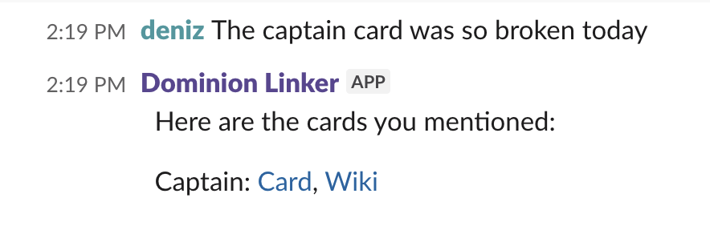

CMU's annual fashion runway show website. The 'FEROX' branding was the driving source behind the layout, colors and interactions of the site.
View site →A typewriter that allowed generating words with animations, a project for the computational design class.
View project →A pixel art website that displays the census data of CMU Design School Alumni regarding their backgrounds, careers and interests.
View project →Google cloud deployed lambda that responds to Slack messages possibly mentioning Dominion cards. Our team has played Dominion online during lunchtime for many years. Having post-game discussions with the references to the cards helps us understand the game better.
